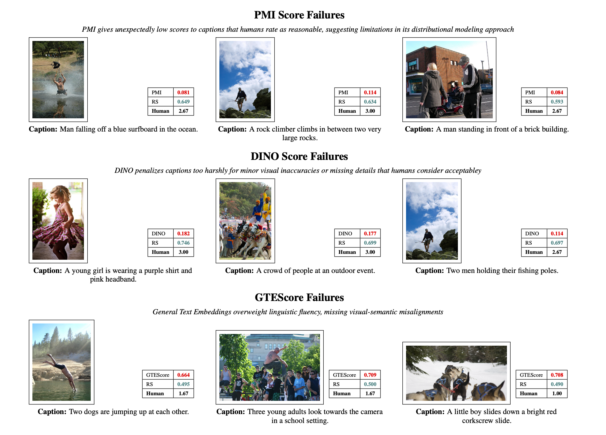

Redemption Score
A Multi-Modal Evaluation Framework for Image Captioning via Distributional, Perceptual, and Linguistic Signal Triangulation
Abstract
Method Overview

MID Component
Captures distributional alignment using Gaussian-assumed CLIP embeddings for global image-text relationships. Provides statistical grounding for image-caption pair evaluation.
DINO Similarity
Measures visual grounding through cycle-generated images using self-supervised features. Evaluates visual consistency and object-level alignment.
GTE Embeddings
Evaluates linguistic fidelity with contextual text similarity, handling paraphrases effectively. Captures semantic meaning beyond surface-level text matching.
Key Results
Cross-Dataset Generalization
The framework demonstrates robust transferability across datasets without parameter retuning:
- Conceptual Captions: Consistent performance with fixed parameters optimized on Flickr8k
- MS-COCO: Maintained ranking trends across different captioning systems
- Multiple Models: Evaluated on BLIP, BLIP-2, MS-GIT, ViT-GPT-2, and Qwen 2.5-VL 7B
- Parameter Stability: Single parameter set works across diverse datasets and domains
Qualitative Analysis
Statistical Robustness
1000-run bootstrap analysis on Flickr8k demonstrates excellent stability and reliability: